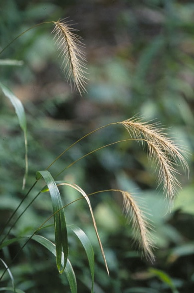
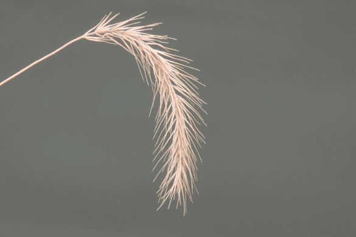
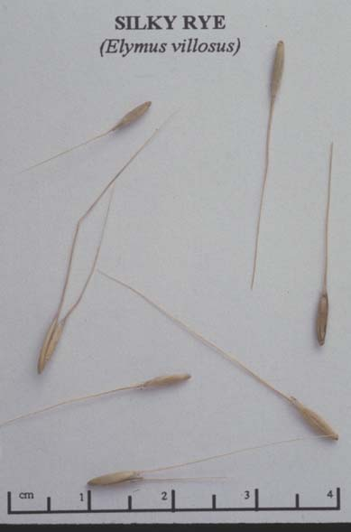

Elymus Villosus
Family: Poaceae
Silky Wild Rye
Swink/Wilhelm #5


 Click to view larger photo
Click to view larger photo

FLOWERING: July
SEED TIMING: September - October
HABITAT: Closed canopy woodland and shaded floodplains
DIAGNOSTIC FEATURES: Silky rye is shorter, smaller and earlier than other ryes. It is distinctive for the silkiness of its upper blades (actually turned over at the stem so the silkiness appears to be the underleaf). The nodding, compact inflorescense is short and straight with straight awns longer than those of E. virginicus, but not as long or wavy as in E. canadensis.
TO PICK: Seed spike will be light tan when ripe. Sometimes called "pop grass" because of the popping sound it makes as harvested. Awned lemmas will remain on stalk after seeds drop, so check to see that there is still seed in the seed cases.